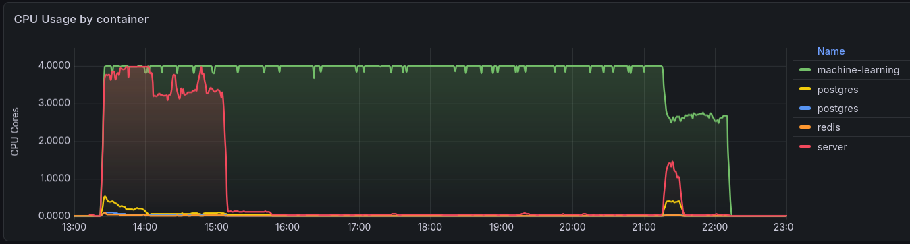
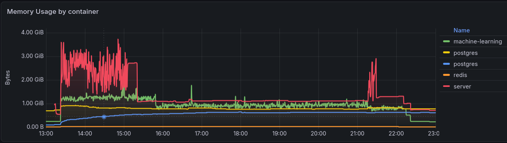
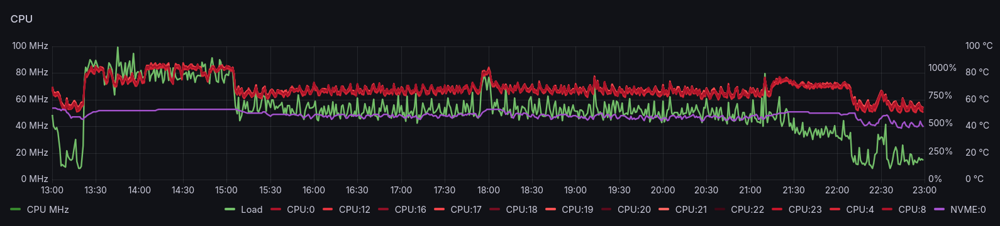

Self-hosted Photo library with Immich
Immich is a self-hosted photo and video management solution that should make it easy to browse, search and organize photos and videos with ease, without sacrificing privacy. This could be a better solution than the less flexible cloud-based services for a family with multiple photographers and very diverse degrees of organizational discipline.
Deployment
Immich requires a Postgres database with VectorChord, which can be more easily managed via the CloudNativePG operator.
CloudNativePG operator
To support creation of a Postgres cluster, install the CloudNativePG Operator using CloudNativePG Helm Charts with the values below to enable CRDs and Prometheous monitoring:
cnpg-values.yaml
$ helm repo add cnpg https://cloudnative-pg.github.io/charts
"cnpg" has been added to your repositories
$ helm repo update
Hang tight while we grab the latest from your chart repositories...
...
...Successfully got an update from the "cnpg" chart repository
...
Update Complete. ⎈Happy Helming!⎈
$ helm upgrade --install \
cnpg cnpg/cloudnative-pg \
--namespace cnpg-system \
--create-namespace \
-f cnpg-values.yaml
Release "cnpg" does not exist. Installing it now.
NAME: cnpg
LAST DEPLOYED: Mon Jun 8 17:31:00 2026
NAMESPACE: cnpg-system
STATUS: deployed
REVISION: 1
TEST SUITE: None
NOTES:
CloudNativePG operator should be installed in namespace "cnpg-system".
You can now create a PostgreSQL cluster with 3 nodes as follows:
cat <<EOF | kubectl apply -f -
# Example of PostgreSQL cluster
apiVersion: postgresql.cnpg.io/v1
kind: Cluster
metadata:
name: cluster-example
spec:
instances: 3
storage:
size: 1Gi
EOF
kubectl get -A cluster
$ kubectl get all -n
cnpg-systemNAME READY STATUS RESTARTS AGE
pod/cnpg-cloudnative-pg-6767d4cccf-sj46n 1/1 Running 0 12s
NAME TYPE CLUSTER-IP EXTERNAL-IP PORT(S) AGE
service/cnpg-webhook-service ClusterIP 10.100.97.45 <none> 443/TCP 12s
NAME READY UP-TO-DATE AVAILABLE AGE
deployment.apps/cnpg-cloudnative-pg 1/1 1 1 12s
NAME DESIRED CURRENT READY AGE
replicaset.apps/cnpg-cloudnative-pg-6767d4cccf 1 1 1 12s
Immich Database
With the operator managed by Helm, create a Postgres cluster by applying the following
specialized cluster manifest. This specifically pulls the AI image bundled with
VectorChord (cloudnative-vectorchord), which is required by Immich, maps the state
onto the Longhorn NVMe class with 2 replicas, and loads the required vector libraries
straight into database memory at boot:
immich-db.yaml
apiVersion: v1
kind: Namespace
metadata:
name: immich
---
apiVersion: postgresql.cnpg.io/v1
kind: Cluster
metadata:
name: immich-postgres
namespace: immich
spec:
instances: 2
imageName: ghcr.io/tensorchord/cloudnative-vectorchord:16-0.3.0
# Native array listing placed directly under postgresql to preload the binaries
postgresql:
shared_preload_libraries:
- "vchord.so"
parameters:
shared_buffers: "512MB"
work_mem: "32MB"
maintenance_work_mem: "128MB"
max_connections: "100"
storage:
size: 20Gi
storageClass: longhorn-nvme
# Bootstraps the system and injects the schema extensions at birth
bootstrap:
initdb:
database: immich
owner: immich_admin
secret:
name: immich-db-credentials
# Executes the required SQL to activate the engine natively on initialization.
postInitSQL:
- "ALTER ROLE immich_admin WITH SUPERUSER;"
- "CREATE EXTENSION IF NOT EXISTS vchord CASCADE;"
postInitApplicationSQL:
- "ALTER ROLE immich_admin WITH SUPERUSER;"
---
apiVersion: v1
kind: Secret
metadata:
name: immich-db-credentials
namespace: immich
type: Opaque
stringData:
username: immich_admin
password: ******************************************
Need to make immich_admin WITH SUPERUSER or Immich crashes.
During the startup sequence, the Immich database connection driver attempts to drop
the extension (DROP EXTENSION IF EXISTS vchord CASCADE;) to handle its internal
table tracking, and then issue a raw CREATE EXTENSION command. Because
CloudNativePG intentionally connects the application container using a standard,
unprivileged role (immich_admin) rather than a dangerous SUPERUSER role,
PostgreSQL blocks the action and returns 42501: permission denied error.
Why use specifically version 16-0.3.0?
The tag 16-0.3.0 explicitly stands for PostgreSQL Major Version 16 coupled with VectorChord Version 0.3.0.
When deploying Immich, selecting the PostgreSQL major version is not about chasing the highest integer (like PG 17 or 18); it is about matching what the current Immich codebase is tested against and ships with natively in its standard deployment pipelines.
- Immich's Core Engine Target: Immich heavily binds its core SQL optimizations, backend query compilers, and backup tools to specific PostgreSQL releases. Using PG 17 or 18 when the current stable layer of Immich targets PG 16 can lead to database startup syntax errors, missing migration variables, or fatal runtime mismatches.
- Major Upgrades in CNPG: In CloudNativePG, upgrading the major database engine
version (e.g., from 16 to 17) requires a formal, semi-automated PostgreSQL Upgrade
Job (
pg_upgrade). You cannot simply change the tag in a production cluster from 16-x to 17-x; doing so will corrupt the transaction write-ahead logs (WAL) and block the pod initialization sequence completely. - How to Pick the True Latest Stable Release: To upgrade safely or target the
exact latest release matching the ecosystem, use the official TensorChord Image
Registry to check tag patterns.
The version string tag logic uses this format:
[PostgreSQL-Major-Version]-[VectorChord-Version].
Apply this database cluster map to the environment:
$ kubectl apply -f immich-db.yaml
namespace/immich created
cluster.postgresql.cnpg.io/immich-postgres created
secret/immich-db-credentials created
$ kubectl get all -n immich
NAME READY STATUS RESTARTS AGE
pod/immich-postgres-1-initdb-9p5k9 0/1 Init:0/1 0 14s
NAME TYPE CLUSTER-IP EXTERNAL-IP PORT(S) AGE
service/immich-postgres-r ClusterIP 10.108.153.64 <none> 5432/TCP 15s
service/immich-postgres-ro ClusterIP 10.101.128.165 <none> 5432/TCP 15s
service/immich-postgres-rw ClusterIP 10.100.22.151 <none> 5432/TCP 15s
NAME STATUS COMPLETIONS DURATION AGE
job.batch/immich-postgres-1-initdb Running 0/1 14s 14s
Track the native setup of database instances using:
$ kubectl get cluster -n immich immich-postgres -w
NAME AGE INSTANCES READY STATUS PRIMARY
immich-postgres 4s 1 Setting up primary
immich-postgres 22s 1 Setting up primary
immich-postgres 22s 1 Setting up primary
immich-postgres 22s 1 Waiting for the instances to become active
immich-postgres 30s 1 Waiting for the instances to become active immich-postgres-1
immich-postgres 39s 1 1 Waiting for the instances to become active immich-postgres-1
immich-postgres 39s 1 1 Waiting for the instances to become active immich-postgres-1
immich-postgres 39s 1 1 Creating a new replica immich-postgres-1
immich-postgres 39s 2 1 Creating a new replica immich-postgres-1
immich-postgres 66s 2 1 Waiting for the instances to become active immich-postgres-1
immich-postgres 86s 2 2 Waiting for the instances to become active immich-postgres-1
immich-postgres 86s 2 2 Cluster in healthy state immich-postgres-1
immich-postgres 86s 2 2 Cluster in healthy state immich-postgres-1
Once the cluster switches to Cluster in healthy state, database foundation is complete.
With the Helm-managed CloudNativePG operator and database clusters fully primed for high-efficiency vector queries, the system is now ready to deploy the Immich application.
Immich App
The following manifest deploys the modern Immich stack, including:
- Immich Server handling web routing, internal logic, and Pomerium ingress
- Immich Machine Learning powering facial recognition, object detection, and
VectorChordembedding tasks, and - an isolated Redis instance for job queue synchronization.
immich-app.yaml
apiVersion: apps/v1
kind: Deployment
metadata:
name: immich-redis
namespace: immich
spec:
replicas: 1
selector:
matchLabels:
app: immich-redis
template:
metadata:
labels:
app: immich-redis
spec:
containers:
- name: redis
image: redis:6.2-alpine
resources:
limits:
cpu: 500m
memory: 256Mi
requests:
cpu: 100m
memory: 64Mi
---
apiVersion: v1
kind: Service
metadata:
name: immich-redis-service
namespace: immich
spec:
selector:
app: immich-redis
ports:
- protocol: TCP
port: 6379
targetPort: 6379
---
apiVersion: apps/v1
kind: Deployment
metadata:
name: immich-machine-learning
namespace: immich
spec:
replicas: 1
selector:
matchLabels:
app: immich-machine-learning
template:
metadata:
labels:
app: immich-machine-learning
spec:
containers:
- name: machine-learning
image: ghcr.io/immich-app/immich-machine-learning:release
env:
- name: TRANSFORMERS_CACHE
value: /cache
volumeMounts:
- name: ml-cache
mountPath: /cache
resources:
limits:
cpu: "2"
memory: 2Gi
requests:
cpu: 500m
memory: 512Mi
volumes:
- name: ml-cache
emptyDir: {}
---
apiVersion: v1
kind: Service
metadata:
name: immich-machine-learning-service
namespace: immich
spec:
selector:
app: immich-machine-learning
ports:
- protocol: TCP
port: 3003
targetPort: 3003
---
apiVersion: v1
kind: PersistentVolume
metadata:
name: ponder-fotos-pv
namespace: immich
spec:
storageClassName: manual
capacity:
storage: 2500Gi
accessModes:
- ReadOnlyMany
csi:
driver: nfs.csi.k8s.io
volumeHandle: luggage-ponder-fotos-nfs-octavo
volumeAttributes:
server: luggage
share: /volume1/NetBackup
subDir: public/ponder/Fotos
mountOptions:
- nfsvers=4.1
- hard
persistentVolumeReclaimPolicy: Retain
---
apiVersion: v1
kind: PersistentVolumeClaim
metadata:
name: ponder-fotos-pvc
namespace: immich
spec:
storageClassName: manual
accessModes:
- ReadOnlyMany
resources:
requests:
storage: 2500Gi
volumeName: ponder-fotos-pv
volumeMode: Filesystem
---
apiVersion: apps/v1
kind: Deployment
metadata:
name: immich-server
namespace: immich
spec:
replicas: 1
selector:
matchLabels:
app: immich-server
template:
metadata:
labels:
app: immich-server
spec:
containers:
- name: server
image: ghcr.io/immich-app/immich-server:release
env:
- name: NODE_ENV
value: production
- name: DB_USERNAME
valueFrom:
secretKeyRef:
name: immich-db-credentials
key: username
- name: DB_PASSWORD
valueFrom:
secretKeyRef:
name: immich-db-credentials
key: password
- name: DB_HOSTNAME
value: immich-postgres-rw.immich.svc.cluster.local
- name: DB_DATABASE_NAME
value: immich
- name: REDIS_HOSTNAME
value: immich-redis-service.immich.svc.cluster.local
- name: IMMICH_MACHINE_LEARNING_URL
value: http://immich-machine-learning-service:3003
ports:
- containerPort: 2283
name: http
volumeMounts:
- name: immich-upload-storage
mountPath: /usr/src/app/upload
- name: nfs-nas-photos
mountPath: /mnt/nas/photos
readOnly: true
resources:
limits:
cpu: "2"
memory: 2Gi
requests:
cpu: 500m
memory: 512Mi
volumes:
- name: immich-upload-storage
persistentVolumeClaim:
claimName: immich-upload-pvc
- name: nfs-nas-photos
persistentVolumeClaim:
claimName: ponder-fotos-pvc
---
apiVersion: v1
kind: PersistentVolumeClaim
metadata:
name: immich-upload-pvc
namespace: immich
spec:
accessModes:
- ReadWriteOnce
storageClassName: longhorn-nvme
resources:
requests:
storage: 100Gi
---
apiVersion: v1
kind: Service
metadata:
name: immich-server-service
namespace: immich
spec:
selector:
app: immich-server
ports:
- protocol: TCP
port: 80
targetPort: 2283
Instead of pointing to a static IP or generic service, this deployment uses
immich-postgres-rw.immich.svc.cluster.local. This is a dynamic, high-availability
service maintained by the CloudNativePG operator. It always automatically maps write
traffic straight to the active primary node.
The NFS volume specification enforces a strict read-only lock (readOnly: true). This
ensures that no matter what tasks Immich runs (such as generating metadata, calculating
embeddings, or compiling AI face points), it cannot alter, modify, or delete a single
file on the NAS volume.
$ kubectl apply -f immich-app.yaml
deployment.apps/immich-redis created
service/immich-redis-service created
deployment.apps/immich-machine-learning created
service/immich-machine-learning-service created
persistentvolume/ponder-fotos-pv created
persistentvolumeclaim/ponder-fotos-pvc created
deployment.apps/immich-server created
persistentvolumeclaim/immich-upload-pvc created
service/immich-server-service created
$ kubectl -n immich get all
NAME READY STATUS RESTARTS AGE
pod/immich-machine-learning-5557f5ff5c-5pxhr 1/1 Running 0 56s
pod/immich-postgres-1 1/1 Running 0 4m39s
pod/immich-postgres-2 1/1 Running 0 3m55s
pod/immich-redis-f6fc5d779-gnnkp 1/1 Running 0 56s
pod/immich-server-7999ddf7f4-4sqjt 1/1 Running 0 56s
NAME TYPE CLUSTER-IP EXTERNAL-IP PORT(S) AGE
service/immich-machine-learning-service ClusterIP 10.103.107.241 <none> 3003/TCP 56s
service/immich-postgres-r ClusterIP 10.96.79.68 <none> 5432/TCP 5m1s
service/immich-postgres-ro ClusterIP 10.102.55.30 <none> 5432/TCP 5m1s
service/immich-postgres-rw ClusterIP 10.97.132.130 <none> 5432/TCP 5m1s
service/immich-redis-service ClusterIP 10.97.1.237 <none> 6379/TCP 56s
service/immich-server-service ClusterIP 10.100.161.54 <none> 80/TCP 56s
NAME READY UP-TO-DATE AVAILABLE AGE
deployment.apps/immich-machine-learning 1/1 1 1 56s
deployment.apps/immich-redis 1/1 1 1 56s
deployment.apps/immich-server 1/1 1 1 56s
NAME DESIRED CURRENT READY AGE
replicaset.apps/immich-machine-learning-5557f5ff5c 1 1 1 56s
replicaset.apps/immich-redis-f6fc5d779 1 1 1 56s
replicaset.apps/immich-server-7999ddf7f4 1 1 1 56s
Once the Immich app is running, it produces lots of details in its logs:
$ kubectl logs -n immich -f deployment/immich-server -c server -f
$ kubectl logs -n immich -f deployment/immich-server -c server -f
Initializing Immich v2.7.5
Detected CPU Cores: 2
(node:7) ExperimentalWarning: WASI is an experimental feature and might change at any time
(Use `node --trace-warnings ...` to show where the warning was created)
Starting api worker
Starting microservices worker
(node:7) ExperimentalWarning: WASI is an experimental feature and might change at any time
(Use `node --trace-warnings ...` to show where the warning was created)
[Nest] 7 - 06/08/2026, 4:50:48 PM LOG [Microservices:WebsocketRepository] Initialized websocket server
(node:24) ExperimentalWarning: WASI is an experimental feature and might change at any time
(Use `node --trace-warnings ...` to show where the warning was created)
[Nest] 7 - 06/08/2026, 4:50:48 PM LOG [Microservices:DatabaseRepository] Creating VectorChord extension
[Nest] 24 - 06/08/2026, 4:50:48 PM LOG [Api:WebsocketRepository] Initialized websocket server
[Nest] 7 - 06/08/2026, 4:50:48 PM LOG [Microservices:DatabaseRepository] Reindexing clip_index (This may take a while, do not restart)
[Nest] 7 - 06/08/2026, 4:50:48 PM LOG [Microservices:DatabaseRepository] Reindexing face_index (This may take a while, do not restart)
[Nest] 7 - 06/08/2026, 4:50:48 PM WARN [Microservices:DatabaseRepository] Table smart_search does not exist, skipping reindexing. This is only normal if this is a new Immich instance.
[Nest] 7 - 06/08/2026, 4:50:48 PM WARN [Microservices:DatabaseRepository] Table face_search does not exist, skipping reindexing. This is only normal if this is a new Immich instance.
[Nest] 7 - 06/08/2026, 4:50:48 PM LOG [Microservices:DatabaseRepository] Running migrations
[Nest] 7 - 06/08/2026, 4:50:49 PM LOG [Microservices:Migrations] Converting database file paths from relative to absolute (source=upload/*, target=/usr/src/app/upload/*)
[Nest] 7 - 06/08/2026, 4:50:50 PM LOG [Microservices:DatabaseRepository] Migration "1744910873969-InitialMigration" succeeded
...
[Nest] 7 - 06/08/2026, 4:50:50 PM LOG [Microservices:DatabaseRepository] Finished running migrations
[Nest] 7 - 06/08/2026, 4:50:50 PM LOG [Microservices:DatabaseService] Checking for schema drift
[Nest] 7 - 06/08/2026, 4:50:50 PM LOG [Microservices:DatabaseService] No schema drift detected
[Nest] 7 - 06/08/2026, 4:50:50 PM LOG [Microservices:StorageService] Verifying system mount folder checks, current state: {"mountChecks":{}}
[Nest] 7 - 06/08/2026, 4:50:50 PM LOG [Microservices:StorageService] Writing initial mount file for the encoded-video folder
[Nest] 7 - 06/08/2026, 4:50:50 PM LOG [Microservices:StorageService] Writing initial mount file for the library folder
[Nest] 7 - 06/08/2026, 4:50:50 PM LOG [Microservices:StorageService] Writing initial mount file for the upload folder
[Nest] 7 - 06/08/2026, 4:50:50 PM LOG [Microservices:StorageService] Writing initial mount file for the profile folder
[Nest] 7 - 06/08/2026, 4:50:50 PM LOG [Microservices:StorageService] Writing initial mount file for the thumbs folder
[Nest] 7 - 06/08/2026, 4:50:50 PM LOG [Microservices:StorageService] Writing initial mount file for the backups folder
[Nest] 7 - 06/08/2026, 4:50:50 PM LOG [Microservices:StorageService] Successfully enabled system mount folders checks
[Nest] 7 - 06/08/2026, 4:50:50 PM LOG [Microservices:StorageService] Successfully verified system mount folder checks
[Nest] 24 - 06/08/2026, 4:50:50 PM LOG [Api:DatabaseRepository] targetLists=1, current=1 for clip_index of 0 rows
[Nest] 24 - 06/08/2026, 4:50:50 PM LOG [Api:DatabaseRepository] targetLists=1, current=1 for face_index of 0 rows
[Nest] 24 - 06/08/2026, 4:50:50 PM LOG [Api:DatabaseRepository] Running migrations
[Nest] 7 - 06/08/2026, 4:50:50 PM LOG [Microservices:MetadataService] Bootstrapping metadata service
[Nest] 7 - 06/08/2026, 4:50:50 PM LOG [Microservices:MetadataService] Initializing metadata service
[Nest] 7 - 06/08/2026, 4:50:50 PM LOG [Microservices:MapRepository] Initializing metadata repository
[Nest] 24 - 06/08/2026, 4:50:50 PM LOG [Api:DatabaseRepository] Finished running migrations
[Nest] 24 - 06/08/2026, 4:50:50 PM LOG [Api:DatabaseService] Checking for schema drift
[Nest] 24 - 06/08/2026, 4:50:50 PM LOG [Api:DatabaseService] No schema drift detected
[Nest] 24 - 06/08/2026, 4:50:50 PM LOG [Api:StorageService] Verifying system mount folder checks, current state: {"mountChecks":{"thumbs":true,"upload":true,"backups":true,"library":true,"profile":true,"encoded-video":true}}
[Nest] 24 - 06/08/2026, 4:50:50 PM LOG [Api:StorageService] Successfully verified system mount folder checks
[Nest] 24 - 06/08/2026, 4:50:50 PM LOG [Api:PluginService] Upserted plugin: immich-core (ID: 5e20a9f4-2b6f-406c-b325-56379fee4751, version: 2.0.1)
[Nest] 24 - 06/08/2026, 4:50:50 PM LOG [Api:PluginService] Upserted plugin filter: filterFileName (ID: 887ca7ad-159f-4770-a09d-8aecffc44930)
[Nest] 24 - 06/08/2026, 4:50:50 PM LOG [Api:PluginService] Upserted plugin filter: filterFileType (ID: abf628cc-e3b6-433b-9e9a-4c87134be2f4)
[Nest] 24 - 06/08/2026, 4:50:50 PM LOG [Api:PluginService] Upserted plugin filter: filterPerson (ID: 5d933528-9f14-4647-b356-2b7b19f2d035)
[Nest] 24 - 06/08/2026, 4:50:50 PM LOG [Api:PluginService] Upserted plugin action: actionArchive (ID: ac280138-c96e-4b7e-9073-f9869637c4c4)
[Nest] 24 - 06/08/2026, 4:50:50 PM LOG [Api:PluginService] Upserted plugin action: actionFavorite (ID: e1448a93-effb-4097-a620-d27578b1dd83)
[Nest] 24 - 06/08/2026, 4:50:50 PM LOG [Api:PluginService] Upserted plugin action: actionAddToAlbum (ID: 371da63c-c1fc-4e15-b993-ea2e290620be)
[Nest] 24 - 06/08/2026, 4:50:50 PM LOG [Api:PluginService] Successfully processed core plugin: immich-core (version 2.0.1)
[Nest] 24 - 06/08/2026, 4:50:50 PM LOG [Api:PluginService] Successfully loaded plugin: immich-core
[Nest] 24 - 06/08/2026, 4:50:51 PM LOG [Api:ServerService] Feature Flags: {
"smartSearch": true,
"facialRecognition": true,
"duplicateDetection": true,
"map": true,
"reverseGeocoding": true,
"importFaces": false,
"sidecar": true,
"search": true,
"trash": true,
"oauth": false,
"oauthAutoLaunch": false,
"ocr": true,
"passwordLogin": true,
"configFile": false,
"email": false
}
[Nest] 24 - 06/08/2026, 4:50:51 PM LOG [Api:SystemConfigService] LogLevel=log (set via system config)
[Nest] 7 - 06/08/2026, 4:50:51 PM LOG [Microservices:MapRepository] Starting geodata import
[Nest] 24 - 06/08/2026, 4:50:51 PM LOG [Api:NestFactory] Starting Nest application...
...
[Nest] 24 - 06/08/2026, 4:50:51 PM LOG [Api:NestApplication] Nest application successfully started
[Nest] 24 - 06/08/2026, 4:50:51 PM LOG [Api:Bootstrap] Immich Server is listening on http://[::1]:2283 [v2.7.5] [production]
[Nest] 24 - 06/08/2026, 4:50:51 PM LOG [Api:MachineLearningRepository] Machine learning server became healthy (http://immich-machine-learning-service:3003).
[Nest] 7 - 06/08/2026, 4:50:52 PM LOG [Microservices:MapRepository] 10000 geodata records imported
...
[Nest] 7 - 06/08/2026, 4:50:58 PM LOG [Microservices:MapRepository] 210000 geodata records imported
[Nest] 7 - 06/08/2026, 4:50:58 PM LOG [Microservices:MapRepository] Successfully imported 224210 geodata records in 7.43s (30165 records/second)
[Nest] 7 - 06/08/2026, 4:51:01 PM LOG [Microservices:MapRepository] Geodata import completed
[Nest] 7 - 06/08/2026, 4:51:01 PM LOG [Microservices:MetadataService] Initialized local reverse geocoder
[Nest] 7 - 06/08/2026, 4:51:01 PM LOG [Microservices:PluginService] Plugin immich-core is up to date (version 2.0.1). Skipping
[Nest] 7 - 06/08/2026, 4:51:01 PM LOG [Microservices:PluginService] Successfully processed core plugin: immich-core (version 2.0.1)
[Nest] 7 - 06/08/2026, 4:51:01 PM LOG [Microservices:PluginService] Successfully loaded plugin: immich-core
[Nest] 7 - 06/08/2026, 4:51:01 PM LOG [Microservices:ServerService] Feature Flags: {
"smartSearch": true,
"facialRecognition": true,
"duplicateDetection": true,
"map": true,
"reverseGeocoding": true,
"importFaces": false,
"sidecar": true,
"search": true,
"trash": true,
"oauth": false,
"oauthAutoLaunch": false,
"ocr": true,
"passwordLogin": true,
"configFile": false,
"email": false
}
[Nest] 7 - 06/08/2026, 4:51:01 PM LOG [Microservices:SystemConfigService] LogLevel=log (set via system config)
[Nest] 7 - 06/08/2026, 4:51:01 PM LOG [Microservices:MachineLearningRepository] Machine learning server became healthy (http://immich-machine-learning-service:3003).
[Nest] 7 - 06/08/2026, 4:51:01 PM LOG [Microservices:NestFactory] Starting Nest application...
[Nest] 7 - 06/08/2026, 4:51:01 PM LOG [Microservices:InstanceLoader] BullModule dependencies initialized
[Nest] 7 - 06/08/2026, 4:51:01 PM LOG [Microservices:InstanceLoader] ClsModule dependencies initialized
[Nest] 7 - 06/08/2026, 4:51:01 PM LOG [Microservices:InstanceLoader] ClsCommonModule dependencies initialized
[Nest] 7 - 06/08/2026, 4:51:01 PM LOG [Microservices:InstanceLoader] KyselyModule$1 dependencies initialized
[Nest] 7 - 06/08/2026, 4:51:01 PM LOG [Microservices:InstanceLoader] OpenTelemetryModule dependencies initialized
[Nest] 7 - 06/08/2026, 4:51:01 PM LOG [Microservices:InstanceLoader] KyselyCoreModule$1 dependencies initialized
[Nest] 7 - 06/08/2026, 4:51:01 PM LOG [Microservices:InstanceLoader] DiscoveryModule dependencies initialized
[Nest] 7 - 06/08/2026, 4:51:01 PM LOG [Microservices:InstanceLoader] OpenTelemetryCoreModule dependencies initialized
[Nest] 7 - 06/08/2026, 4:51:01 PM LOG [Microservices:InstanceLoader] ClsRootModule dependencies initialized
[Nest] 7 - 06/08/2026, 4:51:01 PM LOG [Microservices:InstanceLoader] BullModule dependencies initialized
[Nest] 7 - 06/08/2026, 4:51:01 PM LOG [Microservices:InstanceLoader] BullModule dependencies initialized
[Nest] 7 - 06/08/2026, 4:51:01 PM LOG [Microservices:InstanceLoader] MicroservicesModule dependencies initialized
[Nest] 7 - 06/08/2026, 4:51:01 PM LOG [Microservices:NestApplication] Nest application successfully started
[Nest] 7 - 06/08/2026, 4:51:01 PM LOG [Microservices:Bootstrap] Immich Microservices is running [v2.7.5] [production]
Pomerium Ingress
Add the following file to the Pomerium Kustomize per-service ACLs setup to make the Immich app accessible at https://immich.uu.am
pomerium/pomerium-ingress/immich.yaml
apiVersion: networking.k8s.io/v1
kind: Ingress
metadata:
name: immich-pomerium-ingress
namespace: immich
annotations:
cert-manager.io/cluster-issuer: letsencrypt-prod
ingress.pomerium.io/allow_websockets: true
ingress.pomerium.io/idle_timeout: 0s
ingress.pomerium.io/pass_identity_headers: true
ingress.pomerium.io/preserve_host_header: true
ingress.pomerium.io/timeout: 0s
spec:
ingressClassName: pomerium
rules:
- host: immich.uu.am
http:
paths:
- path: /
pathType: Prefix
backend:
service:
name: immich-server-service
port:
number: 80
tls:
- secretName: tls-secret
hosts:
- immich.uu.am
$ kubectl apply -k pomerium/pomerium-ingress
...
ingress.networking.k8s.io/immich-pomerium-ingress created
...
$ kubectl -n immich get certificate -w
NAME READY SECRET AGE
tls-secret False tls-secret 5s
tls-secret False tls-secret 79s
Once the new certificate is ready, accessing the Immich app at http://immich.uu.am should show the welcome page to setup the admin user:
{kind=link}
API and Mobile apps
To enable access to the API endpoints, which are required for the mobile apps and the
script to rescan libraries on demand, add the following
path-based allow rules:
pomerium/pomerium-ingress/kustomization.yaml
Configuration
Once the frontend is running, the first user to register will be the admin user. This admin user will be able to add other users to the application, although this can be made unnecessary if users already have a GMail account, by setting up OAuth authentication.
Authenticaton
OAuth Authentication is relatively easy to setup in Immich and the documentation even includes a handy Google Example, which is much easier than setting up Immich to use Pomerium as the OIDC provider. Pomerium still block unauthorized web traffic at the infrastructure perimeter, but the actual identity mapping is handled cleanly through a direct relationship between Immich and Google.
First, create a new, dedicated OAuth Client ID in the Google Cloud Console:
- Open the Google Cloud Console and select (or create) the relevant project.
- Navigate to APIs & Services > Credentials.
- Click Create Credentials and select OAuth client ID.
- Set the Application type to Web application and name it (e.g.
Immich-App). -
Configure the specific redirection URLs required by Immich:
https://immich.uu.am/auth/loginhttps://immich.uu.am/user-settingshttps://immich.uu.am/api/oauth/mobile-redirect
-
Click Create and copy the Client ID and Client Secret.
Note
app.immich:///oauth-callback is not a supported URL.
Then setup Login with OAuth in Immich:
- Click on the user badge on the top-right corner of the screen.
- Click on Administration (the wrench icon) under the user badge.
- Open the Authentication Settings section and its the OAuth subsection.
- Enable Login with OAuth and fill in the following fields exactly as follows:
- Issuer URL:
https://accounts.google.com - Client ID: Paste the Client ID from Step 1
- Client Secret: Paste the Client Secret from Step 1
- Scroll down past fields that are populated automatically.
- Issuer URL:
- Set the Behavior Strictness Rules:
- Auto Register: enable this so that authorized users (gated by Pomerium) get an account created automatically the first time the log in.
- Auto Launch: enable this to achieve a seamless workflow, so that users are logged in directly without having to click on any button.
- Mobile redirect URI override: enable this because Google OAuth does not
support the
app.immich:///oauth-callbackURL format. - Mobile redirect URI:
https://immich.uu.am/api/oauth/mobile-redirect
- Click Save Settings.
Because Pomerium
is already authenticating users via Google before they can reach Immich, they will
experience a completely transparent, zero-click login: Immich with Auto Launch enabled
immediately redirects the browser to Google OAuth to confirm identity, but the user is
already logged into Google in that browser session, so Google instantly responds with a
signed web token containing their @gmail.com address, skipping any password prompts,
and Immich will automatically create a new account on their first visit.
Fallback authentication
In a pinch, adding ?autoLaunch=false to the end of the login URL will explicitly tell
the Immich frontend engine to disable the Auto Launch of the OAuth flow. It will stop the
Google redirection loop entirely and present you with the original login screen. From
there, the administrator user can log in with the password created during the initial
setup.
API key
To use scripts that rely on the Immich API, e.g. to trigger library rescan on demand and to create folder-based albums, create an API key from the Immich Web UI, under Account Settings > API Keys, with the following permissions:
album(all)albumAsset(all)albumUser(all)asset.readasset.viewfolder.readlibrary.updateuser.read
External Library
Immich handles pre-existing photo structures using its native External Libraries feature. Using this, a curated photo collection can be loaded directly from external storage, such as the NAS volume mounted over NFS included in the above deployment.
The External Libraries UI is found in the Administration menu, accessed through the user badge icon on the top-right corner of the screen. Using the Create Library button on the top-right corner (under the user badge), the first and critical step is to choose the owner for the library. This cannot be changed later.
Once the library is created, Folders are added by specifying their path in the
Immich pod filesystem, e.g. under /mnt/nas/photos based on the above deployment.
For an initial test, a single subdirectory can be added instead of the entire volume.
This can also be a good way to gradually add parts of the external library in stages,
while at the same time leaving out subdirectories that are not intended to be imported.
To avoid indexing certain files in subdirectories further down the tree, patterns can be
added to the list of Exclusion Patterns next to the list of Folders. To avoid
importing unprocessed raw files, these being stored in raw subdirectories throughout
the library, add the pattern **/raw/**.
The **/ prefix instructs Immich's file traversal loop to intercept the search anywhere
in the folder architecture. If it hits a nested directory like
/mnt/nas/photos/2024/Trip/raw/xt5_1234.raf, the wildcard instantly matches and drops
the file. This allow allows root-level paths, but those can be excluded by adding only
the specific root-level directories to be scanned.
Note
To avoid indexing files inside of multiple directories named after a pattern (not
with the same name), the pattern must be enclosed between **/ and /**; e.g. to
avoid indexing files under diretories named pano-xx where xx are numbers, use
**/pano-*/**.
A more complete list of exclusion patterns
**/._*
**/_a/**
**/banners/**
**/CD/**
**/chus/**
**/.comments/**
**/.dtrash/**
**/@eaDir/**
**/icons/**
**/import_vid/**
**/insta/**
**/Insta-*/**
**/nope/**
**online_auf**
**Online Resolution**
**/oof/**
**/orig/**
**/pano-*/**
**/panos/**
**/parts/**
**/raw/**
**/#recycle/**
**/slides/**
**/#snapshot/**
**/.stfolder/**
**/.stversions/**
**/test/**
**/thumbnails/**
**/TODO/**
**/trash/**
Once all the desired Folders and Exclusion Patterns have been added, click on
Save to store the changes and then Scan to start the scanning process. When
scanning the library, Immich will catalog the directory tree and read file metadata
headers. Once the files are indexed, Immich's background job queue manager will
automatically send files to the immich-machine-learning sidecar. This generates visual
thumbnails, extracts faces, and calculates VectorChord machine-learning embeddings for
semantic search. This deep AI scanning process runs asynchronously in the background and
can take several hours to fully complete depending on the library size. In the meantime,
the web and mobile applications remain completely fast and usable.
The initial test with 1,555 photos in the Events subdirectory (2.9 GB) took about 90
minutes, with CPU usage hard-capped at 2 CPU cores, most of the time used by machine
learning:
{kind=link}
{kind=link}
Given the relatively small impact of dedicating 2 CPU cores in a system with 12 cores, it may be reasonable to increse CPU allowance to 4 cores, maybe even 6, when the time comes to import larger parts of the library.
{kind=link}
The main Photos section (timeline) already showed the photos as soon as the files and metadata were scanned, which took only about 10 minutes, and scrolling through the timeline was fast.
{kind=link}
For the subsequent parts of the library, resource limits were increased for both the web
server and machine-learning pipeline to 4 CPU cores and 4 GB of memory. Indexing the last
part, with 22,600 photos in the People subdirectory took 2-3 hours for the main scan
and a total of 9 hours including the machine learning process.
  
{kind=link}
{kind=link}
{kind=link}
The initial internal storage of 10 GB had to be explaned to 100 GB to make room for all the thumbnails and metadata.
Library rescan on-demand
External libraries are not scanned periodically and there is no facility to "watch" for changes in the file system (which would not work with NFS volumes anyway), but there is a very simple way to trigger a library rescan by sending a single API request. Running this script after updating or adding files to the NAS volume will have changes reflected in Immich, typically within seconds:
#!/bin/bash
API_KEY=XXXXXXXXXXXXXXXXXXXXXXXXXXXXXXXXXXXX
IMMICH_URL="https://immich.uu.am/api"
for lid in 6c753389-b35e-4728-ac61-633c8889aff8; do
curl -X POST "$IMMICH_URL/libraries/$lid/scan" \
-H "Content-Type: application/json" \
-H "x-api-key: $API_KEY"
done
Create an API key with the required permissions for this. The album id
6c753389-b35e-4728-ac61-633c8889aff8 can be taken from the Immich server URL when
viewing the album's settings.
Additional navigation features
For a highly curated photo collection, it is useful to enable navigation features that are disabled by default:
- Folder View provides an additional view besides the timeline that is similar to a file explorer, to navigate through the folders and files in the library. This feature is handy for a highly curated external library with a well organized directory structure.
- Tags provides another view to navigate
through the hierarchical tree of tags, read the XMP
TagsListfield and IPTCKeywordsfields.
Partner Sharing
Partner Sharing lets users share their entirely libraries, including geographical data (or not). On the receiving end, each user can choose to include a partner's photos in their timeline (or not).
Folder-based albums
Immich Folder Album Creator
can be integrated to automatically create albums from specific directories. This is
particularly useful when combined with the
.albumprops File Format
to precisely define which files in which directories are included in each album created
this way, as well as how the photos show up and who has access to them.
Create an API key with the required permissions and add it as a secret:
$ kubectl -n immich \
create secret generic immich-api-key-secret \
--from-literal=api-key="XXXXXXXXXXXXXXXXXXXXXXXXXXXXXXXXXXXX"
To integrate the immich-folder-album-creator docker image, add an additional container
to the Immich server pod, so that it shares the same network and volumes as the Immich
server, and run it periodically to check for new and updated files.
immich-app.yaml
225 226 227 228 229 230 231 232 233 234 235 236 237 238 239 240 241 242 243 244 245 246 247 248 249 250 251 252 253 254 255 256 257 258 259 260 261 262 263 264 265 266 267 268 269 270 271 272 273 274 275 276 277 278 279 280 281 282 283 284 285 286 287 288 289 290 291 292 293 294 295 296 297 298 299 300 301 302 303 304 305 | |
Because the files in the NFS volume are updated by different NFS client than the server,
it is not possible to use inotifywait to watch the NFS volume for updates, so the
script runs in a loop instead. To trigger a manual run, delete the pod to start a new
one.
Limitations
The above script works around certain limitations of the immich-folder-album-creator
and yet some limitations proved impossibe to work around. The most notorious of these is
that when new albums are created, and every time the script runs again subsequently, the
album may not be shared with any of the invited users. The issue appears to "stick" to
each affected album. Even deleting the albums, so that the script would create it anew,
did not help.
Conclusions
Immich performs and feels superior to Google Photos in many aspects, while keeping its familiar UI and extending it in what feels like a natural way. A few features are missing (e.g. adding labels in albums to group photos) and sharing is still quite rough. Work has been started in Immich 3.0 to address the latter, but this may take quite some time to materialize into usable features.
In the meantime, Immich offers a far superior, faster and more reliable way to find out
what details are missing or incorrect in photos metadata (EXIF, IPTC, etc.). Photos
without DateTimeOriginal show up on the date the file was created, Photos with
malformed Model (camera) or LensID tag will show up with an incorrect or broken
value and, most useful, Immich makes that value a direct link to find all the photos
affected by the same issue. And the best part is that fixing the issues in the original
files (in the NAS volume) will lead to Immich updating the assets the next time the
library is scanned.